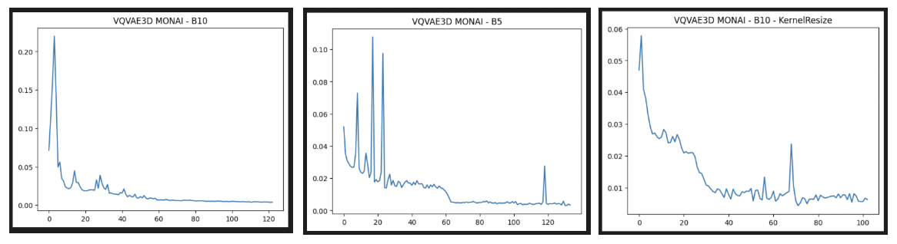
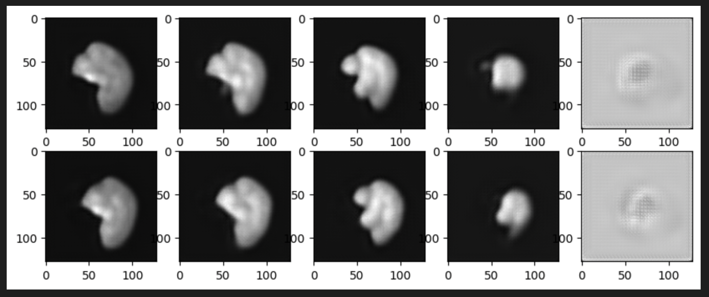
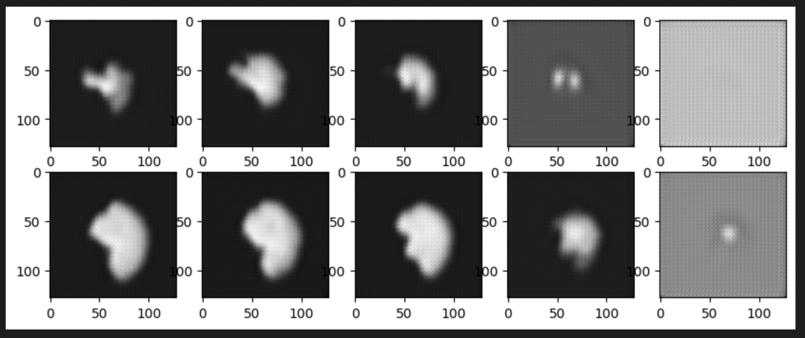
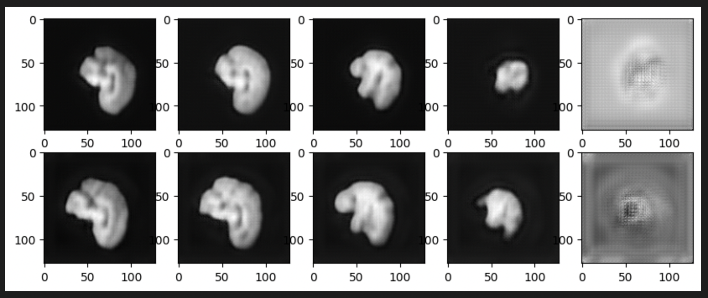

VQVAE MONAI models & checkerboard artifacts: Week 8 & Week 9#
What I did this week#
We observed in our previous results that the Diffusion Model’s performance may depend on better and effective latents from VQVAE. After playing around with convolutional & residual components in the existing architecture that yielded unsatisfactory results, we decided to move to a more proven model on 3D MRIs. It is not necessary that a model that worked well on MNIST dataset would also deliver similarly on 3D MRI datasets, owing to the differences in complexity of the data distributions. Changing the convolutions to 3D filters alone clearly did not do the job.
MONAI is an open source organization for Machine Learning in Medical Imaging, it has repositories and tutorials for various high performing networks tested on multiple Medical Image datasets. We adopted the deep learning architecture for VQVAE from MONAI’s PyTorch implementation that was trained & tested on BRATS(400 data elements). The predominant difference is that the encoder & the decoder of VQVAE use Residual units differently than our existing setup. These Residual units are alternated between downsampling/upsampling convolutions in the encoder/decoder. Additionally, MONAI’s VectorQuantizer uses non-trainable embeddings with statistical updates(Laplace Smoothing) on them at every iteration.
I implemented MONAI’s VQVAE architecture in Tensorflow from scratch, excluding the VectorQuantizer. This architecture has 46.5M trainable parameters. The training objective is to minimize the sum of reconstruction & quantization loss - same training paradigm as our previous experiments. In addition, to address the checkerboard artifacts, I referred to the Sub-Pixel Convolution paper.
This paper proposes two methods to overcome the deconvolution overlap, a phenomenon that causes checkerboarded outputs in deconvolution/upsampling layers. These two methods are - Sub Pixel Convolution & NN Resize Convolution.
For an upsampling rate \(r\), Sub Pixel Convolution outputs \(3r^2\) output channels & later reshuffles channel dimension along spatial dimensions (upsamples them by \(r\) across each) resulting in 3(desired) output channels.
Whereas NN Resize performs interpolation on the kernel to upsample its size by \(r\) before carrying out convolution that outputs 3 channels. The former method relies on shuffling & the later method relies on nearest neighbor interpolation to obtain an upsampled output respectively.
Both methods have shown to perform better qualitatively in dealing with the checkerboards, on random initialization. The authors also go ahead and prove mathematically that with an efficient initialization, both methods prove to be equivalent. They call it the ICNR initialization - Initialization of Convolution with NN Resize.
I ran multiple experiments with batch_size=5,10,10(with ICNR). The training loss curves obtained are as follows, all of them trained on 1 GPU for 24hrs. We see that all of them converge except the last one(B=10 with ICNR).
{kind=link}
The best training checkpoint has been used to reconstruct test images. Following images depict 2 such reconstructions in 2 rows, where 5 slices from each of these reconstructions have been displayed in columns.
The first one is for B=10, the best training checkpoint had training loss=0.0037. Compared to our previous VQVAE model, we see a better performance in capturing the brain outer structure. Moreover, we don’t see white blobs or artifacts as inner matter, rather some curvatures contributing to the inner microstructure of a human brain.
{kind=link}
The second one is for B=10 with ICNR kernel initialization, the best training checkpoint had training loss=0.0067. Although, the test results do not look complete. I implemented ICNR through DIPY’s resize function to achieve NN resize equivalent output on the kernel filters. This initialization didn’t work as it was intended to, further proving that the training is yet to be converged.
{kind=link}
The next & last image is for B=5, the best training checkpoint had training loss = 0.0031. By far the best one quantitatively as well as visually. The test loss for the below reconstructions is 0.0013. The superior performance of this batch size can be owed to the Batch Normalization(BN) layers in the architecture that calculate mean & average of the batch to perform normalization over all batch elements using these statistics. Having lesser batch size may contribute to least variation in the output of the layer & helps in achieving converging outputs faster. This explanation stems from the concept of Contrastive Learning, where BN layers are used as the source of implicit negative loss learners. Higher the batch size, more implicit negative samples to move away from. Whereas our objective is to minimize the reconstruction loss, having lesser batch size consequently may help in lesser variation.
{kind=link}
What is coming up next week#
As the next step, I can focus on training the LDM(Latent Diffusion Model) from the best performing model from the above experiments.
Did I get stuck anywhere#
In both weeks, I had issues accessing resources & specifically multiple GPUs.